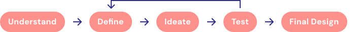
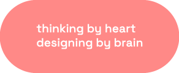
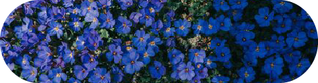
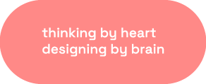
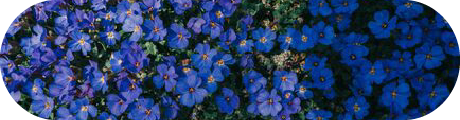

ABOUT THE STARS
a brand identity for a corporate event inspired by Ancient Greeks
Overview
Imagine Above the Stars as an elegant journey through the sky, where each design element reflects the mystique of cosmos and Ancient Greece. Above the Stars, a corporate event, blends horoscopes, astrology and purposeful decision-making into a unique visual experience.
My Role
I independently developed the visual identity for "Above the Stars" while working as a designer at UAY Events. Guided by the project brief and objectives set by the client, I worked closely with the project manager to make key decisions and ensure alignment with the client's vision.
Design Process
Timeline
Completed in 4 months
Tools used
Adobe Illustator, Adobe Photoshop
Applications
Logo Design, Brand Identity, Online materials, Print materials

THE CHALLENGE
CND (Revlon) requested a visual identity for its annual distributor convention, set to take place in Athens with 120 attendees. The client sought a creative concept inspired by Athens’ historical and cultural heritage, emphasizing collaboration among distributors and motivating them to drive sales. The aim of the convention was to present new product launches, strategies and results to CND brand distributors.
Objectives
Develop a creative concept inspired by the city of Athens to serve as the foundation for a corporate visual identity of the event.
Design a visual identity for CND’s annual convention that reflects their brand’s aesthetic and values, ensuring consistency across all event materials: presentations, signage, attendee gifts...
UNDERSTAND
Client background
CND (Creative Nail Design) is a global leader in the nail care industry with over 40 years of expertise. Known as a brand of firsts, CND’s philosophy centres around innovation, quality, and providing unparalleled experiences that inspire endless possibilities.
Based on feedback from previous conventions, we identified several insights to enhance engagement for this event:
Attendees value culturally immersive elements but also require simplicity in accessing essential information.
Prior feedback showed a desire for visually engaging presentations and brand materials that reflect exclusivity.

Ancient Greece: Historical context
To develop a concept that resonates with the event’s location and the brand’s values, we investigated the rich history of Greece, a civilization that laid the foundations for Western culture.

The Greeks made significant contributions to mathematics, astronomy, philosophy and the arts, influencing countless generations. Additionally, the Greeks were pioneers in trade, establishing marketplaces (agoras) where goods and ideas were exchanged, fostering innovation and collaboration.
Through literature review, three primary concepts emerged:
Greek Mythology
Mythology offers timeless symbols of strategy, power, and transformation, aligning well with CND’s event. This concept would connect Greek mythological figures with CND’s core values, invoking a sense of history, strength, and inspiration for attendees.
Ancient Greek Astrology
Astrology was considered a vital guide for success in both personal and business matters. This theme celebrates Greece as the origin of astrology, integrating it as a tool for wisdom, purpose, and connection to energy—a trend increasingly embraced by modern brands.
The Agora—the Ancient Marketplace
Reflecting Greece’s foundational role in commerce, the Agora concept emphasizes gathering, exchange, and the historical spirit of networking. This would mirror the event’s purpose of strengthening business relationships and fostering collaboration.
These concepts not only pay homage to Greece's rich history but also open numerous opportunities for engagement.

DEFINE
Target audience
The attendees for the convention are CND’s distributors. Representing regions from around the world, these retailers are key partners, as CND sells its products exclusively through distributor channels. This annual gathering provides an opportunity for CND’s marketing team to present new launches, share upcoming strategies, and strengthen relationships with this influential audience.
The attendees are high-net-worth business owners aged 30 to 60, who have a strong interest in selling beauty products. For them, this annual convention is an opportunity to strengthen business ties with CND’s marketing team, learn key information about new products and strategies. It is also a great opportunity to network with other distributors.
The target expect an elevated, immersive experience that aligns with the prestige of the CND brand while allowing easy access to information and a memorable thematic experience.
Concept selection and selection
A survey was conducted with the internal marketing team to gauge audience interest in the three proposed concepts: Ancient Greek Astrology, Greek Mythology, and the Agora. The results highlighted a growing trend and fascination with horoscopes, which reflect a direct connection to astrology as a tool for wisdom, purpose, and energy alignment. Based on these insights, the client selected astrology as the final concept, recognizing its potential to create a unique and personalized experience while paying homage to Greece’s historical influence on this ancient practice.
To further validate our approach, we researched communication campaigns that successfully incorporated astrology as core themes:
Dior’s “Constellation Collection
Inspired by celestial maps, Dior’s collection showcased how astrology can evoke elegance and sophistication while appealing to modern audiences.

Zodiac-Themed Brand Activations
Numerous global brands, including Sephora and Pandora, have integrated zodiac themes into their marketing efforts, using astrology as a tool to personalize experiences and foster emotional engagement with their audiences.

Above the stars: creative concept and naming
In Ancient Greece, astrology was more than a mystical belief—it was a guiding tool deeply embedded in personal and societal decision-making. Ancient Greeks turned to the stars for advice on commerce, navigation, and the success of their ventures. They believed the alignment of celestial bodies could influence events on Earth, providing insights into timing, strategy, and outcomes.
This historical significance makes astrology a fitting concept for the annual convention of CND. Just as the Greeks used astrology to navigate their world, today’s businesses can draw inspiration from this practice to make informed decisions and achieve growth. Astrology resonates with the event’s theme of collective collaboration, ans positionates the event as sophisticated, visionary, and connected to the rich history of Ancient Greece.
The proposed naming, “Above the Stars,” symbolizes reaching new heights together as a team of distributors, celebrating collective success while aspiring for even greater achievements. It encourages attendees to see themselves as part of a cosmic journey, where their individual and shared efforts elevate their businesses beyond ordinary expectations.
This concept serves a dual purpose:
Inspiration for Decision-Making
By tapping into the mystique and wisdom of astrology, attendees are encouraged to view their strategies and goals through a broader lens, empowering them to make decisions that align with growth—both economic and personal.
Celebrating Collaboration
The theme reflects the collective success of the CND distributor network. Together, they are navigating the stars, sharing knowledge, and contributing to the global growth of the brand.
Tone of communication and Visual style
The tone of communication will be aspirational, and inspiring, mirroring CND’s position as a premium brand. It will use language that speaks to exclusivity while remaining approachable.
The visual style will incluse elements of Ancient Greek mysticism, aiming to achieve a celestial and premium aesthetic. Key features include:
Color palette
Celestial hues like deep midnight blue, and rich and subtle gold, evoking the grandeur of the night sky.
Typography
Proxima Nova, CND’s corporate sans-serif font, combined with an ornamental serif or ancient-inspired font.
Graphic elements
Star maps, constellations, and patterns inspired by astrological charts.
Imagery
Compasses and other iconic directional symbols, combined with ethereal starry backdrops, to reinforce the theme of guidance and purposeful decision-making.
IDEATE
To embody the enchanting and aspirational spirit of Above the Stars, we created a moodboard that reflects the celestial theme we aim to convey. The imagery features deep blues, shimmering golds, and cosmic patterns that evoke the mystery and allure of astrology.
Logo Design
The logo design process began with exploratory sketches to translate the Above the Stars concept into a recognizable symbol. Early iterations explored the interplay of celestial motifs, such as stars, constellations, and Greek-inspired shapes. These sketches laid the foundation for a logo that balances the event’s mysticism and CND’s modern, professional aesthetic.
The final logo encapsulates the celestial theme with a refined and elegant execution. It integrates astrological symbols, creating design that resonates with the message of the event.
Above the starts: the experience
To bring the “Above the Stars” concept to life, a series of immersive and personalized experiences will be incorporated throughout the event, all aligned with the theme of astrology as a guide for decision-making, and growth. Each activity is designed to ensure attendees connect with the concept while celebrating both their individual and collective journeys.
Space decoration
The Above the Stars concept will be reflected in the meeting room decor with large constellations, star maps, gold accents, mini telescopes and compasses, creating a sophisticated atmosphere. Moreover, ambient lighting and projections of starry skies will enhance the celestial feel.
Personalized Acreditations
Attendees will recieve customized name badges featuring their name, zodiac sign, and corresponding constellation. Designed in the event’s premium blue and gold aesthetic, the badge will encourage interaction and foster personal connections based on astrological traits.

Astrology Kit
Upon departure, each attendee will receive a personalized Astrology Kit, which includes:a personalized astrological birth chart with insights into each attendee’s traits and strengths, a star map highlighting constellations associated with business traits like leadership, strategy, and success, a mini telescope to symbolize the exploration of new opportunities and a compass as a metaphor for guidance in navigating professional paths.
Celestial Experience at the Athens Planetarium
Attendees will visit the Athens Planetarium for a guided celestial experience. The guide will explain how Ancient Greeks used astrology for decision-making, commerce, and navigation. As participants gaze at the stars, they’ll reflect on their own paths, drawing inspiration from the wisdom of the ancients.
TEST
I conducted testing sessions to evaluate the clarity and impact of the visual concept. User feedback will focus on the recognition of astrological concept, thematic cohesion, and colour legibility across various formats, allowing for refinements based on attendee input.
We interviewed one-on-one interviews with a sample of 10 participants, who are going to atttend the event.
Strengths
The branding elements effectively reflect the celestial theme and align well with CND's brand values, creating a unified and sophisticated identity for the event.
The incorporation of astrology as a central theme resonates with the target audience, fostering interest and encouraging participation among distributors.
Most participants appreciated the unique, immersive nature of the astrology-themed activities, particularly the Planetarium experience.
Areas for improvement
Feedback indicated that the interactive and personalised elements are not enough. Some of the designed materials need to be more engaging, especially the astrology kit.
Some users highlighted the need for improved usability and contrast between text and background colours.
some of the digital assets lacked consistency, suggesting the need for stricter brand guidelines to ensure uniformity across all platforms..
This structured approach to gathering and analysing feedback has provided us with critical insights for refining the Above the stars brand identity.
FINAL DESIGN

LEARNINGS
Working on the Above the Stars project has been an enriching experience that has significantly expanded my skills as a designer. The challenge of translating a complex, abstract concept like astrology into a visually engaging and cohesive identity has deepened my understanding of how to balance thematic creativity with functional design. I learned the importance of aligning every element—from the logo design to the personalized astrology kits—around a central, unifying concept. This taught me how to craft an immersive experience that resonates with the audience while staying true to the brand values.
The project also strengthened my ability to work with multiple touchpoints, ensuring consistency across both digital and physical materials. Developing an event’s visual identity required a keen attention to detail and a strategic approach to how each piece would connect with the audience. The challenge of incorporating personalized, interactive elements into the design process pushed me to think outside the box and to explore how design can create deeper connections with attendees.
Additionally, the feedback I received from testing the concept with real users was invaluable. It provided me with insight into how to refine my designs to meet user needs more effectively, whether it was improving usability, readability, or engagement. Through this, I gained a deeper appreciation for the iterative process and the importance of continually testing and refining designs to create a more impactful experience.
Overall, Above the Stars has honed my skills in conceptualizing, designing, and executing a large-scale event experience. It has taught me how to seamlessly integrate storytellin with visual design to create an experience that not only engages but also resonates with the audience. This project has been a significant milestone in my growth as a designer, pushing me to continuously improve and innovate in my craft.
More Art Direction Work


 


